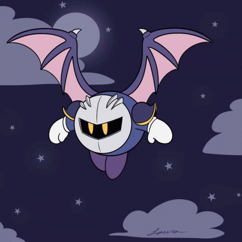
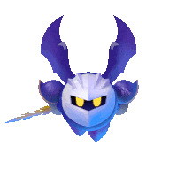

About Meta Knight
Meta Knight is a character from the Kirby video game series. Known for his chivalrous nature and powerful sword skills, he has become a fan favorite.
Initially introduced as an antagonist in "Kirby’s Adventure," Meta Knight has appeared in many Kirby games, often serving as a mentor to Kirby.
The Psychology of Meta Knight: A Complex Portrait of Honor, Ambition, and Isolation
Meta Knight, one of the most enigmatic characters in the Kirby series, is a figure shrouded in mystery and contradiction. His psychology is a fascinating study of honor, ambition, and the tension between isolation and connection. As a warrior of immense skill and a leader of his own crew, Meta Knight embodies a unique blend of stoicism, pride, and a deep sense of duty. To understand his psychology, we must explore his motivations, his relationships, and the internal conflicts that define his character.
The Code of Honor
At the core of Meta Knight’s psychology is a strict code of honor. He is a knight, and his actions are guided by principles of fairness, loyalty, and respect for his opponents. This is evident in his tendency to offer Kirby a sword before their battles, ensuring that the fight is fair and that his adversary is adequately prepared. Meta Knight’s honor is not just a superficial trait; it is a deeply ingrained part of his identity. It reflects his belief in the importance of integrity and the value of a worthy challenge. This code of honor suggests a strong moral compass, but it also hints at a certain rigidity. Meta Knight’s adherence to his principles can sometimes border on obsession, as seen in his willingness to go to extreme lengths to uphold his ideals, even if it means confronting his allies.
Ambition and Leadership
Meta Knight is not merely a solitary warrior; he is also a leader. As the captain of the Halberd, a powerful airship, and the mentor to his loyal crew, he demonstrates a strong sense of responsibility and ambition. His leadership style is authoritative yet fair, and he commands respect from those who follow him. However, his ambition is a double-edged sword. While he seeks to protect Dream Land and its inhabitants, his methods can sometimes be questionable. For instance, in Kirby: Planet Robobot, Meta Knight attempts to take matters into his own hands by launching a preemptive strike against the invading Haltmann Works Company. This act reveals a darker side to his ambition: a willingness to take drastic measures, even if it means acting unilaterally. This suggests a psychological conflict between his desire to protect and his need for control.
The Mask of Mystery
Meta Knight’s iconic mask is more than just a piece of armor; it is a symbol of his enigmatic nature. He rarely reveals his face, and his true intentions are often unclear. This secrecy adds to his mystique but also reflects a deeper psychological need for privacy and self-preservation. Meta Knight’s mask can be interpreted as a metaphor for his emotional guardedness. He keeps his true self hidden, perhaps out of fear of vulnerability or a desire to maintain an air of authority. This emotional distance can make it difficult for others to fully understand or connect with him, contributing to his sense of isolation.
Isolation and Connection
Despite his leadership role, Meta Knight is often portrayed as a solitary figure. He operates independently, and his interactions with others are typically formal and reserved. This isolation is partly self-imposed, a result of his strict adherence to his code of honor and his reluctance to let others see his vulnerabilities. However, it also stems from his unique position as a warrior who is both respected and feared. Meta Knight’s isolation is a source of strength, allowing him to remain focused and disciplined, but it also comes at a cost. His relationships with others, particularly Kirby, are complex and often fraught with tension. While he respects Kirby’s abilities, he also sees him as a rival, and their interactions are marked by a mix of camaraderie and competition. This dynamic highlights Meta Knight’s struggle to balance his need for connection with his desire to maintain his independence.
The Duality of Light and Shadow
Meta Knight’s psychology is defined by duality. He is a protector of Dream Land, yet his methods can be ruthless. He is a mentor and leader, yet he remains distant and enigmatic. He values honor and fairness, yet his ambition sometimes leads him down morally ambiguous paths. This duality makes him a deeply compelling character, as it reflects the complexities of human nature. Meta Knight is not a straightforward hero or villain; he is a multifaceted individual whose actions are driven by a combination of noble intentions and personal flaws.
Conclusion
Meta Knight’s psychology is a rich tapestry of honor, ambition, and isolation. His strict code of conduct, his leadership qualities, and his enigmatic nature make him one of the most intriguing characters in the Kirby universe. At his core, Meta Knight is a warrior who strives to uphold his ideals, even as he grapples with the challenges of leadership and the weight of his own ambitions. His story is a reminder that even the most disciplined and honorable individuals are not immune to internal conflict, and that true strength lies in the ability to navigate these complexities with integrity and resilience. In the end, Meta Knight’s psychology is a testament to the enduring appeal of characters who embody both light and shadow, and who remind us of the nuanced nature of heroism.
 